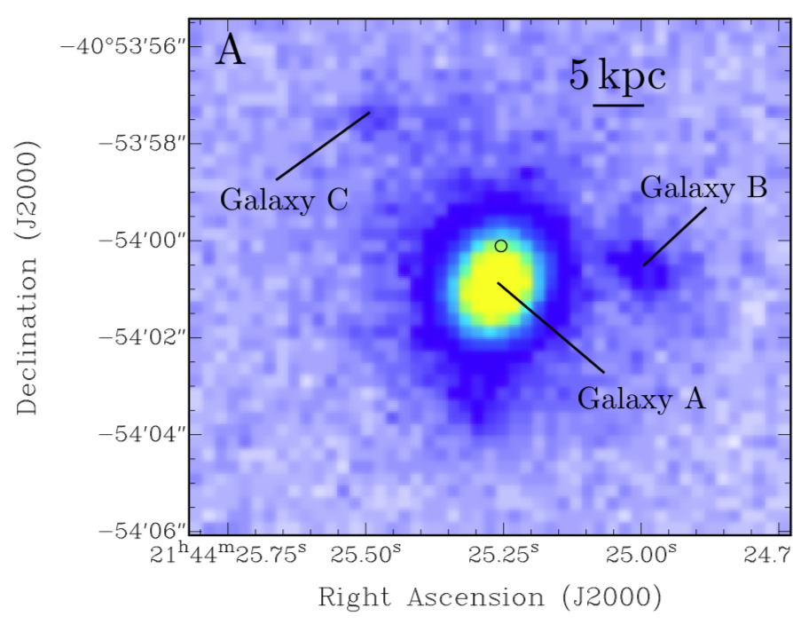

FRB 180924
Image from Bannister et al., 2019, Science, 365, 565
Summary
- Detected by: ASKAP-ICS
- FRB coordinates (RA, Dec): 21:44:25.26 -40:54:00.1 (J2000)
- Host coordinates (RA, Dec): 21:44:25.25 −40:54:00.8 (J2000)
- Redshift: 0.3212
- Observed DM: 361.42 pc cm-3
- Repeating: No
- References: Bannister et al., 2019, Science, 365, 565;
Bhandari et al., 2020, ApJ, 895, 37;
Day et al., 2020, MNRAS, 497, 3335;
Heintz et al., 2020 (arXiv: 2009.10747)
Host galaxy properties
| Quantity | Measured value | Unit |
|---|---|---|
| Stellar mass | (1.32 ± 0.51) × 1010 | M⊙ |
| Star-formation rate | 0.88 ± 0.26 | M⊙/yr |
| Metallicity | 8.93 ± 0.02 | 12+log(O/H) |
| E(B-V) | 0.31 ± 0.11 | mag |
| Mass-weighted age | 383.4 | Myr |
| Absolute r-band mag. | -20.81 ± 0.05 | mag |
| u - r color (rest-frame) | 1.78 ± 0.15 | mag |
| Half-light radius | 2.75 ± 0.10 | kpc |
| FRB offset from galaxy center | 3.43 ± 0.55 | kpc |
Emission line fluxes
| Emission line | Measured value |
|---|---|
| Hα | 2.79 ± 0.03 |
| Hβ | 0.72 ± 0.02 |
| [OII] λ 3726 | 0.40 ± 0.02 |
| [OII] λ 3729 | 0.69 ± 0.03 |
| [OIII] λ 5007 | 0.79 ± 0.02 |
| [NII] λ 6584 | 1.94 ± 0.03 |
Photometry
| Telescope | Filter (eff. wavelength) | Magnitude |
|---|---|---|
| DES | g (527 nm) | 21.56 ± 0.03 |
| DES | r (659 nm) | 20.50 ± 0.02 |
| DES | i (789 nm) | 20.11 ± 0.02 |
| DES | z (976 nm) | 19.83 ± 0.02 |
| DES | Y (1003 nm) | 19.79 ± 0.06 |
| VLT/FORS2 | g (470 nm) | 21.31 ± 0.04 |
| VLT/FORS2 | I (768 nm) | 20.07 ± 0.02 |
| WISE | W1 (3.4 μm) | 16.84 ± 0.10 |
| WISE | W2 (4.6 μm) | 16.06 ± 0.19 |
| WISE | W3 (12.1 μm) | > 11.69 |
| WISE | W4 (22.2 μm) | > 8.50 |